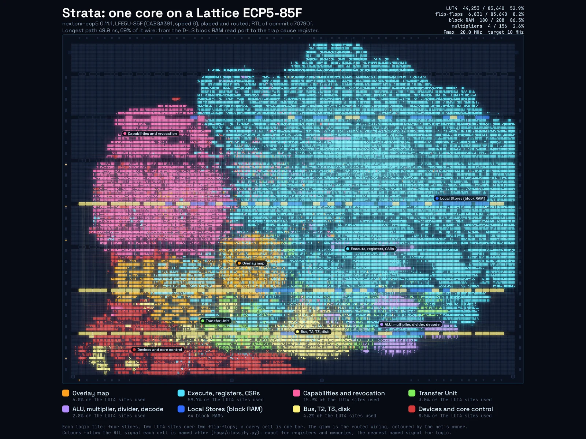
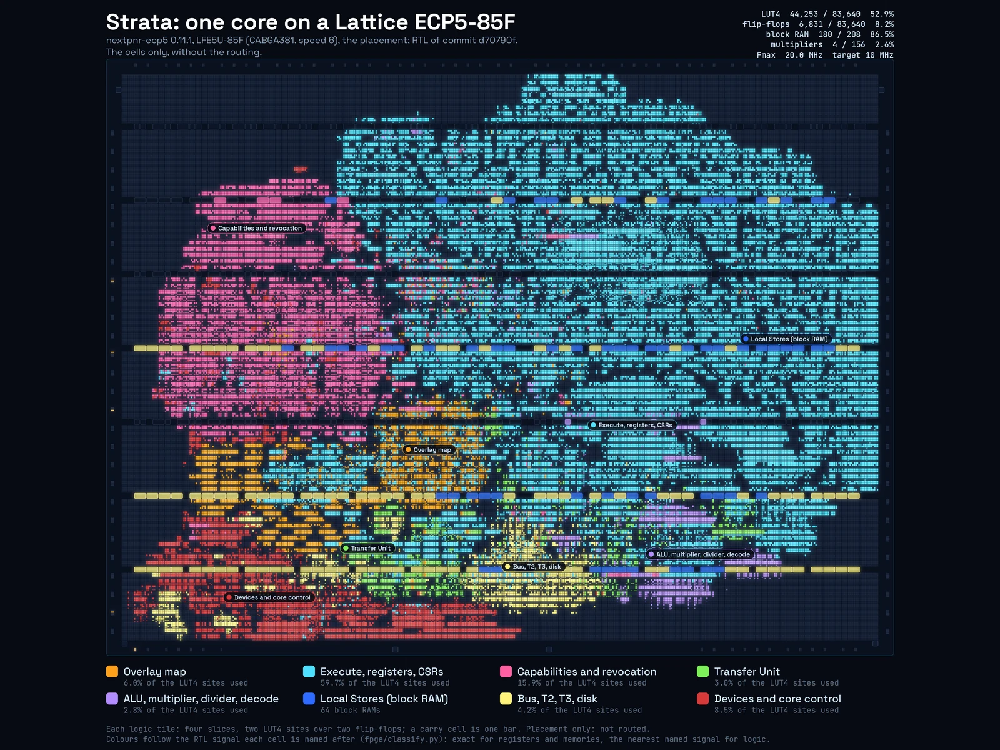

Strata in hardware
ON THE FABRIC
The same SystemVerilog that the simulator checks instruction by instruction against the emulator, synthesized, placed and routed with open tools: one Strata core on a Lattice ECP5-85F, at 20 MHz.
Every number here is from the RTL of commit d70790f (2026-11-10, after the core-size work)
unless a row says otherwise. Nothing has run on a board yet: there is no ECP5 board top, and no bitstream was made.
01The die
An FPGA has no die of its own design, but it has a floor plan: nextpnr puts every LUT and flip-flop on a site and every connection on real wires. This is that, drawn from nextpnr's output: each logic tile as four slices of two LUTs over two flip-flops, each cell coloured by the part of Strata it belongs to, and each routed wire along its real span, glowing in its net's colour.

fpga/results/ecp5-1/die.png).- Execute, registers, CSRs59.7%
- Capabilities and revocation15.9%
- Devices and core control8.5%
- Overlay map6.0%
- Bus, T2, T3, disk4.2%
- Transfer Unit3.0%
- ALU, multiplier, divider, decode2.8%
- Local Stores (block RAM)64 blocks
The colours follow the RTL signal each cell is named after (fpga/classify.py):
exact for registers and memories, the nearest named signal for logic, so the borders between the colours are
approximate. The block RAM rows hold the two Local Stores (blue), the save table (pink) and the
cluster store, disk and system-memory stand-in (yellow).

02How fast
nextpnr's timing analysis after routing: 20.02 MHz for one core (the estimate after placement was 14.5 MHz; the target given was 10 MHz). Strata's core is multi-cycle, not pipelined: most instructions take three cycles, loads four, so this is a few million instructions per second, a working prototype rather than a fast one.
The longest path
49.9 ns, of which 15.4 ns is logic and 34.6 ns wire (69%), through 79 cells. It starts at a read
port of the D-LS block RAM (5.8 ns from the clock to the data: the block RAM's own output register is not used),
runs through the ltag / linst victim compare (a carry chain), the register file and the
trap logic, and ends at the trap cause register s_cause.
The critical path is in fpga/results/ecp5-1/timing.txt.
The next step is to register the Local Store read: use the block RAM's output register, or give loads one more cycle. Before the core-size work the longest path ran through a multiplier computing the tag-lookup set address (69 ns, 14.5 MHz, on that core with its overlay map cut to 12 entries so that it would route); that address now takes its own cycles, and the 64×64 single-cycle multiplier is a 4-cycle 32×32 one.
Two cores
Two cores do not fit any ECP5. They synthesize to 81,654 LUT4 sites, which pack into 86,932 logic cells (103% of an 85F, the largest ECP5), and need 247 block RAMs where the 85F has 208: each core's two 64 KiB Local Stores are 64 DP16KD. nextpnr could not make a legal placement, so there is no two-core clock from this flow. The Xilinx 7-series has room (below), but no open timing yet: the OSS CAD Suite's nextpnr has no Xilinx support, and openXC7 has to be built separately.
03Every stage, timed
Wall-clock time on an arm64 Mac with 18 cores (other jobs running alongside), nextpnr with 4 threads.
| Stage | Tool | 1 core | 2 cores |
|---|---|---|---|
| Synthesis | sv2v, Yosys 0.70 synth_ecp5 | 98 s | 208 s |
| Placement | nextpnr-ecp5 0.11.1, static placer + annealing | 71 s | no legal placement stopped at 538 s |
| Routing | nextpnr, router1 | 288 s | — |
| nextpnr in all | with packing and timing | 366 s | — |
| Both pictures | fpga/render.py | 17 s | — |
Before the core-size work the one core filled 99.6% of the 85F: nextpnr's default placer could not place it, the static placer could, and routing had not finished after an hour.
04Where the LUTs went
One core on Xilinx 7-series after each step of the core-size work (fpga/synth.sh xc7 1
after each commit). Each bar is coloured by the part of the core that step cut.
41% smaller: narrow fields where the architecture guarantees narrow values (every capability's base
and length fit the largest space, 226 bytes), one port where there were many, RAM for tables read one
entry at a time, and extra cycles for rare instructions. No instruction's result changed; csave,
crestore, ltag, linst and mul take a few more cycles, the examples
0.03% to 2.2% more in all. The details are in fpga/README.md.
What is left
Of the routed core's logic cells, by the colours of the die:
Execute dominates now: its result multiplexers, the banked trap registers and the integer register file's ports. The capability registers are still flip-flops; the overlay map, a third of the core before, is 6%.
05Sizes by family and core count
| Yosys, after synthesis | Logic | Flip-flops | Block RAM | Multipliers |
|---|---|---|---|---|
| Xilinx 7-series, 1 core | 30,011 LUTs | 6,869 | 88 RAMB36 + 4 RAMB18 | 4 DSP48E1 |
| Xilinx 7-series, 1 core, 8 map entries | 29,078 LUTs | 6,495 | 88 + 4 | 4 |
| Xilinx 7-series, 2 cores | 58,066 LUTs | 11,713 | 120 + 7 | 8 |
| Xilinx 7-series, 6 cores | 168,694 LUTs | 31,102 | 248 + 19 | 24 |
| Lattice ECP5, 1 core placed and routed: 20.0 MHz | 41,219 LUT4 sites | 6,831 | 180 DP16KD | 4 MULT18X18D |
| Lattice ECP5, 2 cores does not fit | 81,654 LUT4 sites | 11,683 | 247 DP16KD | 8 |
On the ECP5 a carry cell takes both LUT4 sites of a slice, so "LUT4 sites" counts carries twice: that is the number to compare with the device. The system around the cores: a 64 KiB cluster store (T2), a 128 KiB block-RAM disk and a 32 KiB stand-in for system memory, which is DRAM on a board.
Against the devices
Marks: 63,400 Artix-7 100T (Arty A7) 134,600 Artix-7 200T (Nexys Video) 203,800 Kintex-7 325T
Marks: 83,640 logic cells, 208 block RAMs: the LFE5U-85F, the largest ECP5
06What fits where
StrataOS needs six cores today: the system core and five servers. One and two cores run bare-metal programs, the boot ROM and Forth.
| Cores | Device | Use | Tools |
|---|---|---|---|
| 1 | Lattice LFE5U-85F (Radiona ULX3S) | 53% of the logic, 87% of the block RAM; placed and routed, 20.0 MHz | open: Yosys, nextpnr, Project Trellis |
| 1 | Artix-7 100T (Digilent Arty A7) | 47% of the LUTs | Vivado, or openXC7 |
| 2 | Artix-7 100T | 92% of the LUTs: on paper only, too full to route comfortably | |
| 2 | Artix-7 200T (Digilent Nexys Video) | 43% of the LUTs | Vivado, or openXC7 |
| 2 | any ECP5 | does not fit: 103% of the logic, 118% of the block RAM | |
| 6 (StrataOS) | Kintex-7 325T | 83% of the LUTs | Vivado |
| 6 and more | Kintex-7 410T / 480T, Virtex-7, UltraScale+ | room to spare | Vivado |
| many | AWS EC2 F1 / F2 (Virtex UltraScale+, over a million LUTs) | dozens of cores by this count; not tried. Needs Vivado, which the AWS FPGA Developer AMI includes | Vivado |
All but the ECP5 row are synthesis estimates. The block RAM counts leave out the system-memory stand-in, which is DRAM on a board. There is no video output on an FPGA yet: the framebuffer is system memory and nothing scans it out; the console on the UART is the only output.
07The open route
ECP5: done
Yosys, nextpnr and Project Trellis's chip database take one core from SystemVerilog to a routed design at
20 MHz in under eight minutes. A bitstream is one more step (ecppack); there is no board top
with SDRAM for it yet.
Artix-7: next
openXC7 (Yosys, nextpnr-xilinx, Project X-Ray) covers the Artix-7: one core on a 100T, two on a 200T by
the LUT counts above. Not tried yet; the Arty top (fpga/arty/) is written for Vivado and LiteDRAM.
Six cores
StrataOS's six cores need a Kintex-7 or larger, and Vivado. A StrataOS for fewer cores is designed but paused.
ASIC experiment
An open-silicon flow (LibreLane on the GF180MCU process) is under way: below, once it has results.
08What is on the chip
The system the die shows, as the RTL builds it (rtl/strata_top.sv): cores, the far bus,
the memories and devices behind it, and the capability machinery between the cores. The colours are the die's.
Gate-level schematics from Yosys (the system's top level, the divider, the UART) are in
doc/figures/, and the
microarchitecture in the manual's implementation chapter.
09Do it yourself
Yosys and sv2v (Homebrew has both), nextpnr-ecp5 from YosysHQ's OSS CAD Suite (these results: the 2026-11-10 build, nextpnr 0.11.1), and Python with numpy and Pillow for the pictures.
fpga/synth.sh ecp5 1synthesize one core (xc7 or ecp5, any core count, optional overlay map size)fpga/pnr.shplace and route it on an LFE5U-85F with nextpnrfpga/ecp5-runs.sh 1 2all of it for 1 and 2 cores, with both pictures and every stage's timefpga/ecp5-runs.sh render 1redraw the pictures from the kept data alone, in 17 secondsThe results, logs, the extract the pictures are drawn from and the full-size pictures are kept in
fpga/results/ (in Git LFS); the
flow and the numbers are explained in fpga/README.md.
10ASIC (open flow, GF180MCU)
Coming: Strata through an open ASIC flow, LibreLane on GlobalFoundries' 180 nm GF180MCU process. Its results and dies will be here, with more at hardware/asic/, once they are published.